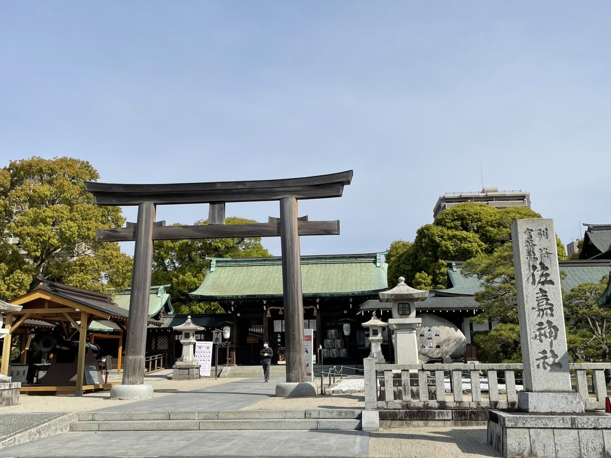

さがばいまっぷは、佐賀県佐賀市の本当の魅力を発見し、巡るためのウェブサイトです。ガイドブックには載っていないような、地元ならではのリアルなスポットや魅力的な情報を提供しています。
各スポットには、実際に体験したからこそわかる見どころや、佐賀市民目線のローカルなコメントが含まれており、佐賀市を訪れる方々に新しい楽しみ方を提案します。
さがばいまっぷを活用して、佐賀市での観光・お出かけ体験をより充実させましょう！
県外から来た人は「吉野ヶ里遺跡」などの
有名スポットに行ってしまいがちですが、
このマップには、実際に佐賀市に住んで
体験したことや行ったスポットしか記載していません。
佐賀市民目線でのリアルなコメントや、
佐賀市だからこその「自然が生み出すアクティビティや風景」、
「佐賀だからこそ体験できるもの」を
厳選して詰め込んでいます。
